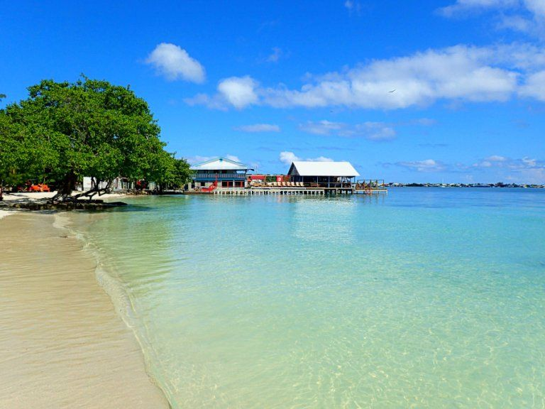

Utila

Un olimpo natural, un incentivo para los buzos y una condición profunda para
el arrecife de coral más magno de América, con manglares, barrizales y
llanuras tropicales, un instituto internacional, y una experiencia con
el tiburón ballena, el lugar de investigación y la residencia del swamper,
un camaleón endémico del cayo. Es uno de los lugares más seguros y
económicos del mundo para obtener licencias de buceo para muchos niveles.